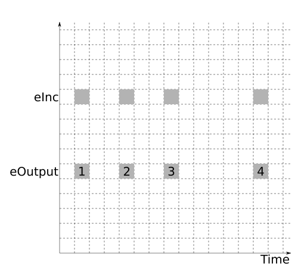
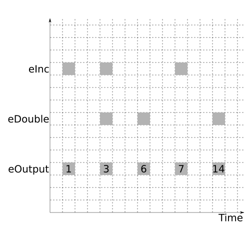

There are two main data types in FRP - Events and Behaviors - and we combine them together to build an FRP event network which describes how our program is going to respond to various events over time.
Events
An Event is something that happens at a particular point of time - like a button press, or a key press, or the receipt of a HTTP request - and a Behavior is something that has values at all points of time.
For our purposes, this is a logical view of time, where are logical clock ticks every time an event is fired from outside of our FRP event network.
These logical points in time are infinitely thin.
The documentation mentions that the semantics of an Event a mean you can view it as being similar to [(Time, a)]. The time here isn’t directly observable and is assumed to be continuously increasing.
While we have a new logical point in time whenever an event is fired from outside of the event network, it is still possible for several different events to be active at the same time.
To see this, let’s take a look at Event from reactive-banana:
data Event awhich has a Functor instance:
instance Functor Event where ...The Functor instance provides a good example of how we can end up with multiple events happening at the same time originating from the inside of our event network.
The simplest demonstration of this is:
|
 |
(I’m using the let above to give things a name that I can refer to easily).
In FRP code you’ll also see <$ used about as much as <$>:
|
 |
There are also functions where the outputs occur at the same points in time as the inputs, but there may be fewer occurrences of the output than the input.
Two examples leap to mind.
The first is filterE:
filterE :: (a -> Bool) -> Event a -> Event awhich we can use pretty much as you would expect:
|
 |
The second is split:
split :: Event (Either a b) -> (Event a, Event b)which is handy when we want distinct events as outputs of something:
|
 |
A related function which is also very useful is filterJust:
filterJust :: Event (Maybe a) -> Event awhich filters out the Nothing values and strips the Just constructor from the other values.
If you’re dealing with a function in reactive-banana that has a pure Event as an output then - with one exception that we’ll cover later - the output Event will only ever be active at the same logical points of time as the input Events.
The output Event maybe be active less often - as was the case with filterE - but it will always be active at the same time as one or more of the input events.
This becomes relevant when we start combining Events.
If we never had simultaneous events, we could use something like:
union :: Event a -> Event a -> Event awhich would activate the output whenever either of the inputs were active.
We have to deal with the possibility of events occurring at the same time, and so reactive-banana provides:
unionWith :: (a -> a -> a) -> Event a -> Event a -> Event aThis has a nice visual demonstration:
|
 |
If the one of the input events is active and the other event is not, then the output is activated with the value of the active input. If both events are active at the same time, then we combine the output is activated with the value that results from running the combining function on the two active values.
We can use to make a very useful helper:
leftmost :: [Event a] -> Event a
leftmost = foldl (unionWith const) neverwhich returns that leftmost of the events in the input list that are active at any moment in time.
An example might help:
|
 |
It’s often used either to combine a set of events that will never occur at the same time, or to set up priorities between events that might end up occurring at the same time.
There’s another function that helps us deal with lists of Events:
unions :: [Event (a -> a)] -> Event (a -> a)but we’ll cover that later on.
Now that we can combine events, we are able to use that to get some important work done:
multiple :: Int -> Event Int -> Event Int
multiple m =
filterE (\x -> x `mod` m == 0)
importantWork :: Event Int -> Event String
importantWork eCount =
let
eFizz = "Fizz" <$ multiple 3 eCount
eBuzz = "Buzz" <$ multiple 5 eCount
eFizzBuzz = unionWith (++) eFizz eBuzz
in
eFizzBuzzConnecting the event network to the outside world
(The code for this section is here)
That’s all well and good, but there are plenty of snippets of FRP code like this floating around on the internet.
The first thing that gave my understanding a bit of a bump was hooking up a snippet like the above into an actual program.
We can divide up our program into the pieces that are building up our event network and the pieces that are interacting with our event network from the outside.
One of the functions that bridges the divide is newAddHandler:
newAddHandler :: IO (AddHandler a, a -> IO ()) We can package it’s output up into a data structure:
data EventSource a = EventSource {
addHandler :: AddHandler a
, fire :: a -> IO ()
}and create a helper function to create those data structures:
mkEventSource :: IO (EventSource a)
mkEventSource =
uncurry EventSource <$> newAddHandlerThe addHandler field is used to register for event notifications from inside the event network, and the fire field is used to trigger the firing of those same events from outside the event network.
Every event that we fire in this way occurs at a distinct moment in logical time. In fact, these are the only observable points in time that will exist in our system. The documentation for sodium refers to these as transactions - which can be a helpful way of thinking of them - and the transactions have their own context.
In reactive-banana there is a context provided by the Moment and MomentIO monads which is used to build up and alter the event network. If you see these in the signature of a function, it usually means that you’re dealing with something that is going to have an effect outside of the current moment in logical time.
The fromAddHandler function adds inputs into the event network by registering an event handler:
fromAddHandler :: AddHandler a -> MomentIO (Event a) The reactimate function adds outputs in IO into the event network, that occur at the same points of time as the events containing the IO action:
reactimate :: Event (IO ()) -> MomentIO () These two functions are the main way that we connect IO inputs and outputs to our event network.
Assuming we have an event source which fires with an incrementing Int, we can use these to finish building our event network:
networkDescription :: EventSource Int -> MomentIO ()
networkDescription c = do
eCount <- fromAddHandler . addHandler $ c
let
eFizz = "Fizz" <$ multiple 3 eCount
eBuzz = "Buzz" <$ multiple 5 eCount
eFizzBuzz = unionWith (++) eFizz eBuzz
reactimate $ (\x -> putStrLn $ "count: " ++ show x) <$> eCount
reactimate $ putStrLn <$> eFizzBuzzWe still need to fire these events from the outside.
To fire the event for a particular Int value and then wait a second, we can write:
eventStep :: EventSource Int -> Int -> IO ()
eventStep e i = do
fire e i
threadDelay 1000000Then we just need to keep doing that with increasing values for the Int:
eventLoop :: EventSource Int -> IO ()
eventLoop e =
traverse_ (eventStep e) [0..]Now we stitch it all together:
go :: IO ()
go = do
input <- mkEventSource
network <- compile $ networkDescription input
actuate network
eventLoop inputWe use compile to create a NetworkDescription and actuate to get it kicking over. Most of our programs are going to do pretty similar things with respect to gluing things together, so it’s unlikely that we’ll delve too deeply into that last piece of code.
So far it’s not a very impressive event network, but it makes for a nice starting point.
Counting with events
(The code for this section is here)
Aside from being a toy problem, the solution is a little underwhelming, since we’re doing the counting outside of our event network.
We’d really like our event loop to be doing just the IO that we need and letting the event network handle the rest.
The event loop would then look like this:
eventLoop :: EventSource () -> IO ()
eventLoop e =
forever $ do
threadDelay 1000000
fire e ()What we need from there is a way to start with a series of firings of clock ticks of type Event () and end up with an Event Int that has counted the clock ticks we have seen so far.
That is going to require some memory inside our event network. As that means we’ll have informaton sticking around for longer than the current transaction, it is going to be inside one of the Moment or MomentIOmonads.
If we’re not doing IO and we want something to be usable from within either of those monads, the MonadMoment typeclass has us covered:
class Monad m => MonadMoment m where
liftMoment :: Moment a -> m aand so you’ll see that used for a lot of the combinators in reactive-banana.
The first of these that we’ll look at is accumE:
accumE :: MonadMoment m => a -> Event (a -> a) -> m (Event a)
accumE x eFunction = ...This is the first time we’ve had something stateful in our event network. The state starts with the value x, and then every time eFunction fires the state is modified by the function inside that event.
It is also worth noting that we never observe the initial value of the state. The first output we’ll see will be equivalent to ($ x) <$> eFunction, as the output event fires at the same points in time as the input event.
|
 |
where the first output has the value Blue (via flip Red).
() to a steadily incrementing event of type Int:
|
 |
This is also a good place to take a little bit of time out from the narrative flow and have a look at lefmost and unions, since they are often used with things like accumE.
Recall that leftmost had type:
leftmost :: [Event a] -> Event aIt behaves like this: - if none of the input events are firing, the output doesn’t fire - if exactly one of the input events are firing, make that the output event - if more than one of the input events are firing, make the output event the one that is in the leftmost position in the input list
We can use this when we know that the events we are using can never be happening simultaneously. We can also use this a little like a switch-case statement in other languages, to establish which events take priority over which other events - there will be an example of this a post or two from now.
|
 |
especially if you look at what happens when both inputs are active at the same point in time.
Another way to combine lists of events is with unions: `haskell unions :: [Event (a -> a)] -> Event (a -> a)
|
 |
we can see that unions composes the functions in the active events from right to left.
To summarise, leftmost sets up a prioritised choice and unions combines simultaneous inputs using function composition. We can always roll our own combining function using unionWith if we need something different to either of those.
That digression can be put on the shelf for now, but we’ll be seeing plenty of those functions as we go along.
With accumE in our (currently quite modest) arsenal, we can build a component that counts clock ticks:
counter :: MonadMoment m => Event () -> m (Event Int)
counter eTick = accumE 0 ((+ 1) <$ eTick)The initial value is set to 0, so our first observable output (if any) will be 1.
This is all we need to build an event network that takes clock tick as inputs:
networkDescription :: EventSource () -> MomentIO ()
networkDescription t = do
eTick <- fromAddHandler . addHandler $ t
eCount <- accumE 0 ((+ 1) <$ eTick)
let
eFizz = "Fizz" <$ multiple 3 eCount
eBuzz = "Buzz" <$ multiple 5 eCount
eFizzBuzz = unionWith (++) eFizz eBuzz
reactimate $ (\x -> putStrLn $ "count: " ++ show x) <$> eCount
reactimate $ putStrLn <$> eFizzBuzzThere are a couple of variations we can apply to these pieces, although they’re mostly a matter of personal taste.
Since we already have the importantWork and counter pieces written, we could use them instead of inlining them by hand:
networkDescription :: EventSource () -> MomentIO ()
networkDescription t = do
eTick <- fromAddHandler . addHandler $ t
eCount <- counter eTick
let
eFizzBuzz = importantWork eCount
reactimate $ (\x -> putStrLn $ "count: " ++ show x) <$> eCount
reactimate $ putStrLn <$> eFizzBuzzInstead of using the MonadMoment, we could be explicit about the fact that counter does no IO:
counter :: Event () -> Moment (Event Int)The usage would then change from:
eCount <- counter eTickto:
eCount <- liftMoment $ counter eTickI like both the automatic lifting and being explicit about the fact that certain subcomponents don’t do IO, although I tend to favour the automatic lifting when push comes to shove.
Testing event networks
(The code for this section is here)
There’s a tantalizing function available in reactive-banana.
interpret :: (Event a -> Moment (Event b)) -> [Maybe a] -> IO [Maybe b] According to the haddocks, the IO is an implementation detail but you can otherwise treat it as a pure function.
The first argument is a fragment of an event network to interpret.
The second argument is a list of values for the Event as to feed into the network. Each element in the list represents the value of the input event at successive logical moments in time. If the value is Nothing, then the event doesn’t fire at the logical moment in time.
The output is acting much the same as the second argument.
Also in the haddocks for interpret: “Useful for testing.” That was like a red rag to a bull for me.
There is also a version of interpret that works with MonadIO, namely interpretFrameworks.
If we want to generalise our testing facilities, we can capture the common parts in another typeclass:
class MonadMoment m => Testable m where
interpretEvents :: (Event a -> m (Event b)) -> [Maybe a] -> IO [Maybe b]and provide instances for Moment and MomentIO:
instance Testable Moment where
interpretEvents = interpret
instance Testable MomentIO where
interpretEvents = interpretFrameworksI tend to favour completely separating out my IO, so I’m happy enough to use interpret for most things. With that said Testable can be handy if you’re writing something at your library boundary in MonadMoment so that other people can use it wherever they like.
Let us have a look at how it works on counter (with some formatting liberties):
> xs <- interpretEvents counter $ replicate 15 (Just ())
[ Just 1
, Just 2
, Just 3
, Just 4
, Just 5
, Just 6
, Just 7
, Just 8
, Just 9
, Just 10
, Just 11
, Just 12
, Just 13
, Just 14
, Just 15
]So far, so good.
We can write combine our pure event network code:
combined :: Event () -> Moment (Event String)
combined eTick = do
eCount <- counter eTick
return $ importantWork eCountand test that as well:
> xs <- interpretEvents combined $ replicate 15 (Just ())
[ Nothing
, Nothing
, Just "Fizz"
, Nothing
, Just "Buzz"
, Just "Fizz"
, Nothing
, Nothing
, Just "Fizz"
, Just "Buzz"
, Nothing
, Just "Fizz"
, Nothing
, Nothing
, Just "FizzBuzz"
]This could also be used for some property based tests. Although that might be overkill for FizzBuzz.
Next up
We’ve now got a few pieces of the puzzle together.
In the next post we’re going to use them to make a slow start on our chat server. So slow, in fact, that “command line echo program” might be a better description. Still, you have to start somewhere.